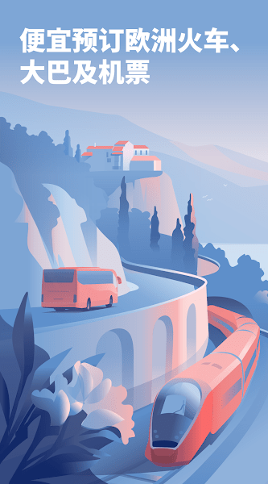
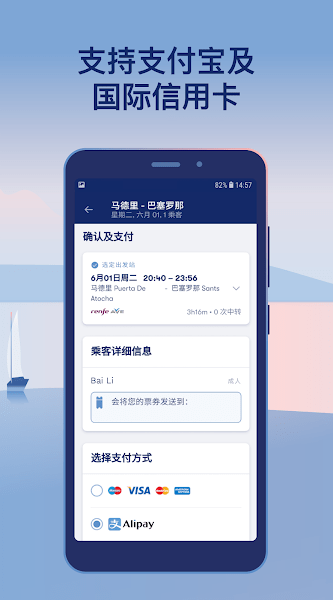

Omio 到底值不值得掏钱？一笔一笔算给你看
应用本身免费不代表零成本，平台费、Flex、保险叠加起来能差出多少。按出行频率分三档算账，哪类人闭眼付、哪类人再等等、哪类人永远不用付，三分钟对号入座。
它是什么：一个帮你把四种交通放在一起比价的聚合器
Omio 的核心定位简单说就是把火车、大巴、航班、轮渡四种交通模式放进同一个搜索框，你搜一段行程，它把所有可行的方案按时间、价格、换乘次数排好给你挑。欧洲城市之间公共交通选择多但分散——火车走一家官网、大巴走另一家、廉航又自己有 App，Omio 做的就是把这些票源聚合到一个界面里，让你不用翻来翻去。

它的Omio官网可以直接下载应用，注册账号、搜索比价全部免费。真正花钱的环节不在下载那一刻，而是在你确认下单、生成一张票的时候。这点跟很多订阅制工具不一样——你不买票就永远一分钱不用花。
定价拆解：免费版给什么、付费版多什么
先把账算清楚，得先搞明白"花钱"到底花在什么地方。素材里给的费用结构我整理成一张表：
| 环节 | 要不要掏钱 | 备注 |
|---|---|---|
| 下载应用 | ✅ 免费 | App Store / Google Play 都不收 |
| 注册、搜索、比价 | ✅ 免费 | 搜一百遍也不花钱 |
| 车票票价 | 💰 必花 | 跟你在承运商官网直接买是同一个价，Omio 不标高 |
| 平台服务费 / 订票费 | 💰 可能花 | 部分订单收，短途便宜票上占比明显 |
| Omio Flex | 💰 可选 | 加几块钱，退票规则更宽松 |
| 旅行保险 | 💰 可选 | 另加钱，覆盖改签退票与延误 |
| 选座费 | 💰 看情况 | 大巴多数免费，高铁长途常见几欧到十几欧 |
官方下载渠道同时覆盖 App Store 和 Google Play，跨平台账号通用。几个关键细节值得单独拎出来说。
平台服务费不是每单都收。 样本里没给具体比例，但有一个观察：短途便宜票上平台费占比显眼。你想想看，一张 5 欧的大巴票，平台费收 1 欧就是 20%；一张 80 欧的跨国火车，平台费就算收 3 欧占比不到 4%。所以短途高频用 Omio 的朋友反而要更在意这一项。
票价档位本身有弹性差异。 同一趟车，促销档可能几十欧、半弹性档贵十几欧、全弹性档再贵十几欧。促销档退改几乎没戏，半弹性档退要手续费，全弹性档基本随心改。Omio Flex 是在票价档位之外单独加价的可选附加——它让退改规则比你原本选的档位更宽松，相当于"加钱买后悔药"。
选座费有一个容易踩的坑：顺序反了。 选座开关在票价档位选择之后出现。同一个座位，全弹性档可能免费选、促销档可能不可选。先看选座费用再定档位，很容易以为选座贵了。
算账：分三类人算，你的场景在第几档
下面我按出行频率和单次金额把用户分成三档，每一档算一算用 Omio 的真实成本到底多少、免费版够不够用。
第一档：轻度用（一年 1~3 次跨国/城际出行）
画像：一年出欧洲 1~3 次，每次可能是周末游或者一次公司出差，不会频繁换票。
成本怎么算：假设一年买 3 张票，平均单价 60 欧，平台费平均每张 2 欧。全年成本 = 60×3 + 2×3 = 186 欧（≈1450 元人民币），跟你直接去各承运商官网买是一样的，平台费总共多花 6 欧，约合 47 块钱。
免费版够不够：完全够。搜索比价不花钱，买票时票价跟直购同源，平台费这点钱换一个统一界面少翻三四家官网，值不值自己定。Flex 和保险？偶尔出行一次，行程变动概率低，加钱买 Flex 大概率用不上。
有没有更便宜的替代：你也可以直接去 SBB（瑞士铁路）、Deutsche Bahn（德国铁路）、Flixbus（欧洲大巴）各自官网分别搜，省掉那点平台费。但搜一段行程你得开三四个浏览器标签手动比价——时间成本比平台费贵多了。
第二档：主力用（一个月 2~4 次，常跨城际或跨国）
画像：可能常驻欧洲、或者经常出差跑几个国家，一个月两三段行程，每段 50~150 欧不等。
成本怎么算：假设一个月 3 张票，平均单价 80 欧，平台费平均每张 2.5 欧。月成本 = 80×3 + 2.5×3 = 247.5 欧，全年约 2970 欧。如果再加 Flex，每张票多收 3~5 欧，全年再加 108~180 欧。
免费版够不够：基础比价和买票够，但 Flex 可能值得考虑。 主力出行变动概率明显高了——会议临时改时间、客户出差取消，这类情况一年碰到几次很正常。一张 80 欧的票，加 4 欧 Flex 换退票更宽松的规则，相当于用 5% 的成本覆盖了"可能全损"的风险。但旅行保险要不要加，看你单次出行金额和是否有其他保险覆盖。
有没有一类情况主力用户特别需要注意：多模式联程票。A 到 B 没直达，Omio 会自动帮你拼火车+大巴+轮渡的组合。这种票的退改是按每一段各自的票规来的，一段行程拼了两个承运商，改签时要分别处理——具体联程票退改细节可以去Omio文档查。前段晚点误后段、行李自己搬——这些都是聚合票的固有成本，主力用户用多了自然会碰到。
第三档：重度用（一周 1~2 次，通勤或密集商务）
画像：一周一两段城际，或者常年在欧洲各地跑展会/客户，单次金额不一定高但频次极高。
成本怎么算：假设一周 1.5 张票，平均单价 40 欧（短途通勤类为主），平台费平均每张 1.5 欧。月成本 = 40×6 + 1.5×6 = 249 欧，全年约 2988 欧。这里最关键的变量是：短途高频意味着平台费占比很高——40 欧的票加 1.5 欧平台费是 3.75%，但如果是 10 欧的大巴票加 1 欧平台费就是 10%。
免费版够不够：比价功能本身够用，但平台费的累积效应需要认真算。 重度用户一年买六七十张票，平台费累计下来可能 100~200 欧，不是小数目。这时候得问自己一个问题：我是真离不开 Omio 的多模式聚合，还是其实大多数时候只坐一种交通？如果 90% 是火车，那直接装 Deutsche Bahn 或 SBB 的官方 App 可能更省心也更便宜。
一个隐性成本：退款等待。 聚合平台的退款链路是承运商 → 平台 → 你，比直购慢一层。支付宝/微信通常几个工作日，国际信用卡可能要数周到两周。重度用户如果频繁改签退票，这个时间差可能让你现金流很被动。

替代方案：不付这笔钱还有什么路
嫌平台费贵？退一步不买票你永远不花钱，但真要出行，还有几条路可以绕开 Omio：
路线一：承运商官网直购。 这是最直接的省平台费方式。缺点也直接——你得自己去各家官网分别搜，而且有些国家的铁路官网只有当地语言界面，英语支持不全。好处是退改链路短、到账快，部分铁路公司有自己的 loyalty 积分。
路线二：直接装多家官方 App。 比如 Flixbus App 管大巴、Deutsche Bahn 管火车、Ryanair 管廉航。App 之间不互通，比价比拼就得手动，但票规透明、没有中间商赚差价。适合出行方式比较固定的人。
路线三：降级使用——只搜不买。 Omio 搜索比价完全免费，你可以用它把所有方案都列出来，然后抄一个最便宜的组合去承运商官网买票。这属于"白嫖比价服务"，但 Omio 不会阻止你这么做。
结论：哪类人闭眼付、哪类人再等等、哪类人永远不用付
算完了可以对号入座了。
闭眼付的人：主力用一档，一个月两三段行程、常跨城际或跨国。平台费那点钱换一个统一界面省来回切换，加上 Flex 覆盖行程变动风险，整体成本占比合理，时间价值远超过多花的那几欧。
再等等的人：轻度用一档，一年三四次以内。先试试看免费功能够不够用、平台费对你那点频次是不是真的在意。真要嫌贵，去承运商官网直购省下来的钱跟你花的时间成本比一比就知道了。
永远不用付的人：有两类。第一类是重度短途高频用户——你一年六七十张票全是 10~30 欧的短途，平台费累计下来就是一笔不小的开销，直接装承运商官方 App 更划算。第二类是行程完全固定从不改签——那 Flex 和保险这两项对你来说就是纯浪费，买票时注意看最终总额把附加项勾掉就行。
最后给一个实操建议：付款前一定要看最终总额，不要只看列表价。 Omio 的搜索结果展示的通常是票价本身，平台费、Flex、保险、选座费这些加购项都在结账页才出来。列表价比另一家便宜 2 欧，加上平台费可能反而贵了 1 欧。付款前那三秒钟滚动一下最终金额，能帮你避开不少隐性加价。
这套资料在三个仓库都能拿到——GitHub上维护着完整的文档镜像，Gitee同步了一份方便国内用户直接访问，GitCode那边同样有备份，看你习惯用哪家。